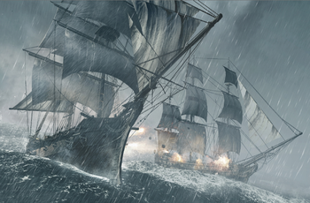
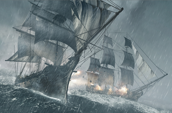

Assassin's Creed Black Flag
Gameplay
Assassin's Creed IV: Black Flag is an action-adventure, stealth game set in an open world environment and played from a third-person perspective. The game features three main cities; Havana, Kingston, and Nassau, which reside under Spanish, British, and pirate influence, respectively. As well as this, locations like Port-au-Prince and smaller locations like Greater Inagua are used as main story points. It also features 50 other individual locations to explore, including atolls, sea forts, Mayan ruins, sugar plantations, and underwater shipwrecks, with a 60/40 balance between land and naval exploration.[1] It has a more open world feel, with missions similar to those found in Assassin's Creed, as well as fewer restrictions for the player. The world opens up sooner in the game, as opposed to Assassin's Creed III, which had very scripted missions and did not give players freedom to explore until the game was well into its first act. The player will encounter jungles, forts, ruins, and small villages and the world is built to allow players much more freedom, such as allowing players to engage, board, and capture passing ships and swimming to nearby beaches in a seamless fashion. In addition, the hunting system has been retained from Assassin's Creed III, allowing the player to hunt on land, and fish in the water, with resources gathered used to upgrade equipment.
A new aspect in the game is the Jackdaw, the ship that the player captains. The Jackdaw is upgradeable throughout the game, and is easily accessible to the player when needed. In addition, a new underwater component has been added. The player has access to a spyglass, allowing the examination of distant ships, along with their cargo and strength. It can also help determine if an island still has animals to hunt, treasures to find, high points to reach for synchronization or additional side-quests to complete, such as assassinations and naval contracts. An updated form of the recruit system introduced in Assassin's Creed: Brotherhood has returned, allowing Edward to recruit crew members. While Kenway's crew will remain loyal to him, they can be promoted to captain acquired ships, and are needed to assist in boarding enemy vessels, they cannot assist in combat or perform long-range assassinations, as in previous games. Ubisoft removed this aspect of the brotherhood system, believing it allowed players to bypass tense and challenging scenarios too easily.
In the present day, at the offices of Abstergo Entertainment—a subsidiary of Abstergo Industries—in Montreal, Quebec, players engage in modern-day pirating through the exploration of Abstergo's offices, eavesdropping and hacking, all without combat. As well, various "hacking" games, similar to previous cluster and glyph puzzles, are present, that uncover secrets about Abstergo.
Multiplayer also returns, with new settings and game modes, though it is only land-based.
Synopsis
The main character of the game is Edward Kenway (Matt Ryan), a Welsh privateer-turned-pirate and eventual member of the Assassin Order. Edward is the father of Haytham Kenway, and grandfather of Ratonhnhaké:ton (Connor), the two playable characters of Assassin's Creed III. Real-life individuals that are encountered include the pirates Edward "Blackbeard" Thatch (voiced by Mark Bonnar), Benjamin Hornigold, Mary Read, Stede Bonnet, Anne Bonny, Calico Jack, and Charles Vane (Ralph Ineson).
Setting
As is the case in previous games in the Assassin's Creed series, the story is divided into two intertwined halves, with one in the present day, one in a historical setting, and the events of each influencing the other. Although the present-day story had previously established that an Animus was required to view one's ancestors memories, the ending of Assassin's Creed III reveals that Abstergo can now view a host's genetic memories simply by sequencing the host's DNA. As such, the player character is hired by Abstergo Entertainment to investigate a pivotal character in Desmond's ancestry, the Assassin Edward Kenway. A notorious pirate and privateer operating during the Golden Age of Piracy, Kenway's story is set in the Caribbean, and mixes open-ended ship-based exploration with combat and land-based adventures in Cuba and Jamaica, and on a number of Caribbean islands, parts of southern Florida and eastern Mexico.
Plot
Samples taken from Desmond Miles' body in the moments after his death have enabled Abstergo Industries to continue to explore his genetic memories using the Animus' newfound cloud computing abilities. The unnamed player character is hired by Abstergo Entertainment, from their Montréal headquarters, to sift through the memories of Edward Kenway, an eighteenth-century pirate, the father of Haytham Kenway and the grandfather of Ratonhnhaké:ton. Ostensibly, this is to gather material for an Animus-powered interactive feature film, but in reality, Abstergo—the Templars of the present time—are searching for a First Civilization structure known as the Observatory, and are using the memories of Edward Kenway to find it.
As Kenway, the player must unravel a conspiracy between high-ranking Templars within the British and Spanish empires who, under the guise of cleaning up piracy in the Caribbean, have used their positions to locate the Sage—later identified as Bartholomew Roberts—who is the only man that can lead them to the Observatory, a First Civilization device which can monitor anyone anywhere in the world when provided a blood sample, which they intend to use to spy on and blackmail world leaders. Kenway becomes an unwitting player in their plot when he kills a rogue Assassin, Duncan Walpole. Seeing an opportunity for profit, Kenway takes Walpole's place at a meeting of Templars in Havana, where he meets Woodes Rogers as well as Cuban Governor, and Templar Grandmaster, Laureano Torres. His recklessness endangers the entire Assassins' Order, prompting him to pursue the Sage and the conspirators from the Yucatán Peninsula to Jamaica, eventually catching Roberts on the island of Príncipe off of the African coast.
Meanwhile, a band of notorious pirates—including Edward "Blackbeard" Thatch, Benjamin Hornigold, Mary Read (under the alias "James Kidd") and Charles Vane, among others—dream of a pirate utopia where man is free to live beyond the reach of kings and rulers. With Kenway's help, they seize control of Nassau and establish a pirate republic. However, poor governance, a lack of an economy and an outbreak of disease bring the pirate state perilously close to collapse, with the founders divided on the best way forward. Kenway attempts to resolve the dispute, but is too late to stop the Templars from exploiting the situation for their own ends.
Eventually, Kenway and Roberts uncover the location of the Observatory and retrieve the artifact powering it, but Kenway is betrayed by Roberts at the last moment. After a brief stint in prison for the crimes of piracy, Edward escapes with the aid of Ah Tabai, the Assassin Mentor, and elects to join their Order. Chasing down and eliminating Roberts and the Templar conspirators, Kenway retrieves the artifact and returns it to the Observatory, sealing it away for good. He is left facing an uncertain future with his newfound convictions until he receives a letter informing him of the passing of his wife and the imminent arrival of his hitherto unknown daughter, Jennifer Scott. Kenway travels back to England, promising Ah Tabai that he will continue the fight against the Templars back home in England. Some years later, Kenway, Jennifer (using her mother's surname in her memory) and Kenway's young son Haytham are about to watch a play in an English theatre.
In the present day, the player is contacted by John, Abstergo Entertainment's information technology manager. John convinces the player that their employers know more than they are telling, and encourages them to investigate in more detail. He convinces the player to hack several Animus terminals and security cameras, and then has them deliver the information taken to Shaun Hastings and Rebecca Crane, who are working undercover to infiltrate Abstergo. When the facility is locked down after the hackings are discovered, John arranges for the player to access the Animus' core, at which point Juno materializes into an incorporeal form. She reveals that although it was necessary to open her temple to avert disaster, the world was not ready for her, and she is unable to affect it or possess the player character as her agents intended. John is unmasked as the reincarnated form of the Sage and attempts to murder the player to cover up the failed attempt at resurrecting Juno, but is killed by Abstergo's security before he can do so, thus implicating him as the one responsible for the hacks. As Roberts, the Sage admits to Kenway that he owes no allegiance to the Assassins or the Templars and instead uses whoever he thinks represents his best chance of achieving his ends. With the Sage dead, the player is contacted by the Assassins as they continue their infiltration of Abstergo, but neither side is able to explain the Sage's presence or identify his followers, the Instruments of the First Will.
Freedom Cry
The Freedom Cry downloadable content is set twenty years after the events of Black Flag and follows Adéwalé in his mission as an Assassin.
While attempting to intercept Templar activities in the West Indies Sea, Adéwalé is shipwrecked off the coast of Haiti. Making his way into Port-au-Prince, he establishes that the Templars are working with Bastienne Josèphe, the proprietor of a local brothel and a sympathiser to the Maroons, a faction of freedom fighters made up of liberated slaves led by Augustin Dieufort. Despite his obligations to the Brotherhood of Assassins, Adéwalé becomes sympathetic to their cause, and joins with the Maroons in hijacking a vessel, Experto Crede, in order to interrupt the slave trade.
Whilst working for Bastienne, Adéwalé begins to uncover a conspiracy within the French provincial government ruling Port-au-Prince. The local governor, Pierre de Fayet, plans a clandestine scientific expedition to measure the curvature of the earth and gather geographical data, which they intend to sell to the highest bidder with the promise of naval superiority. Adéwalé successfully sabotages the expedition by substituting the illiterate slaves being used by the expedition for literate members of the Maroons.
Tensions begin to arise within the Maroons when Adéwalé plots further raids against the slave trade. Bastienne objects, as de Fayet will only punish those trapped in slavery further as punishment. Adéwalé ignores her, but is horrified when he witnesses a frigate fire on an unarmed slave ship to prevent the slaves from joining the Maroons. Adéwalé boards the slave ship and manages to save a few slaves from drowning before the ship capsized with the rest. He plans retribution, but Bastienne cautions that taking revenge will weaken the Maroons' cause; if Adéwalé is to kill de Fayet, then he should do so acting as an agent of justice. After assaulting the Governor's Mansion, pursuing him through the city and fighting off a local garrison, Adéwalé finally corners and kills de Fayet, who claims that slaves are incapable of self-governance and turn to armed uprising at the slightest provocation. Adéwalé points out that none of the slaves or overseers came to his aid, and instead let him die. After killing de Fayet, Adéwalé returns to say goodbye to Bastienne before returning to the Assassin Order, but pledging to use his newfound convictions to aid people who are oppressed rather than the cause of their would-be liberators.
Development
In early February 2013, during its quarterly financial call to investors, Ubisoft CEO Yves Guillemot confirmed that the next Assassin's Creed game, due for release some time before April 2014, would feature a new hero, time period, and development team. On February 28, 2013, Ubisoft posted their first promotional picture and cover for their next Assassin's Creed game, following leaked marketing material days before. It announced the title of the game as Assassin's Creed IV: Black Flag and featured an unnamed character holding a flintlock and a sword with a black flag in the back ground containing the Assassin's symbol with a skull. A reported glitch on the official Assassin's Creed IV website suggested the game will release on next-gen consoles and October 29 as the release date, which was confirmed by the first trailer for the game, released on March 4, 2013 (originally leaked on March 2, 2013, but was quickly pulled by Ubisoft).
Assassin's Creed IV: Black Flag was announced with a cinematic trailer on March 4, 2013. Development began in mid-2011 at Ubisoft Montreal by a separate team from the one on Assassin's Creed III, with additional work done by Ubisoft studios in Annecy, Bucharest, Kyiv, Montpellier, Singapore and Sofia.
Lead content manager Carsten Myhill stressed away the sentiment that the sequel should have been a spin-off in the same vein as Assassin's Creed: Brotherhood or Assassin's Creed: Revelations, given the ostensible similarities with Assassin's Creed III. He stated "The whole feeling of the game is completely fresh and new. It will feel very different from Assassin's Creed III. I think it completely warrants the Assassin's Creed IV moniker, not only with the new name and setting, but the attitude and the tone of the experience."[28] Assassin's Creed IV is the first main series numbered title to carry a subtitle, a decision which Myhill says was made to clearly distinguish the pirate theme from the rest of the franchise.
By utilizing the AnvilNext engine, the development team is able to work with one engine for both the next-gen and current-gen versions of the game, as the AnvilNext engine was designed with next-gen capabilities in mind, while still working on current-gen systems. In addition, each system will have their own intricacies and feature sets, with support for the different controllers and utilizing features specific to each console. The PC version supports Nvidia's TXAA.